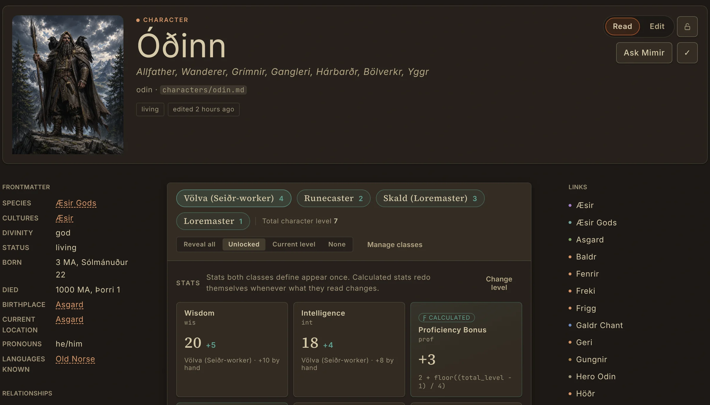
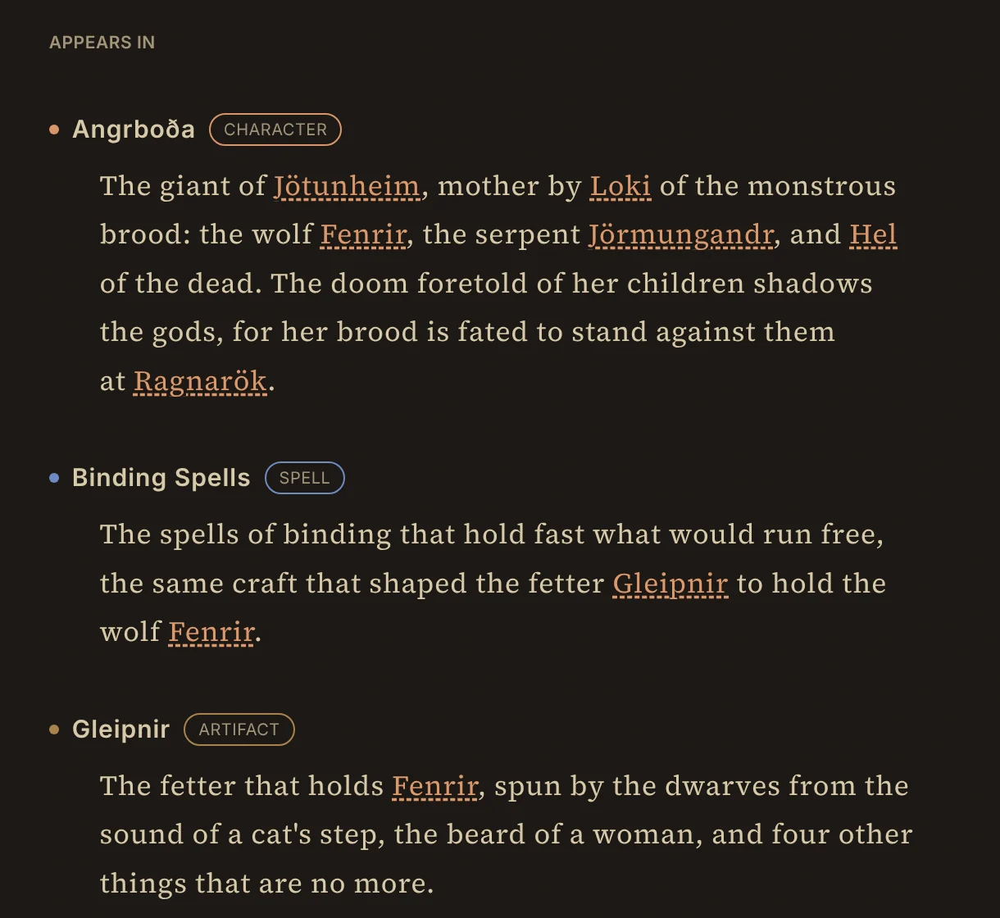
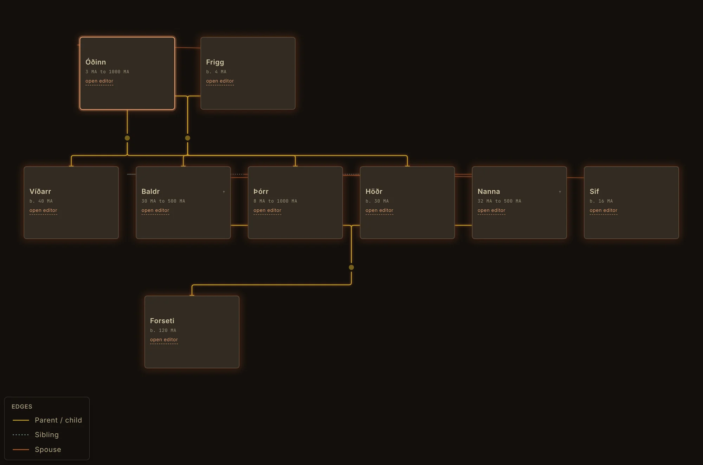
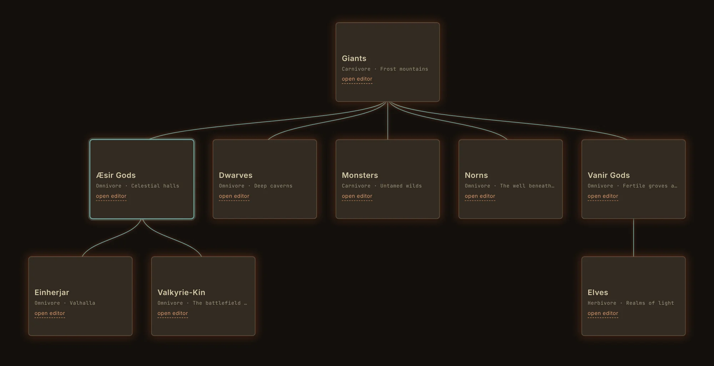
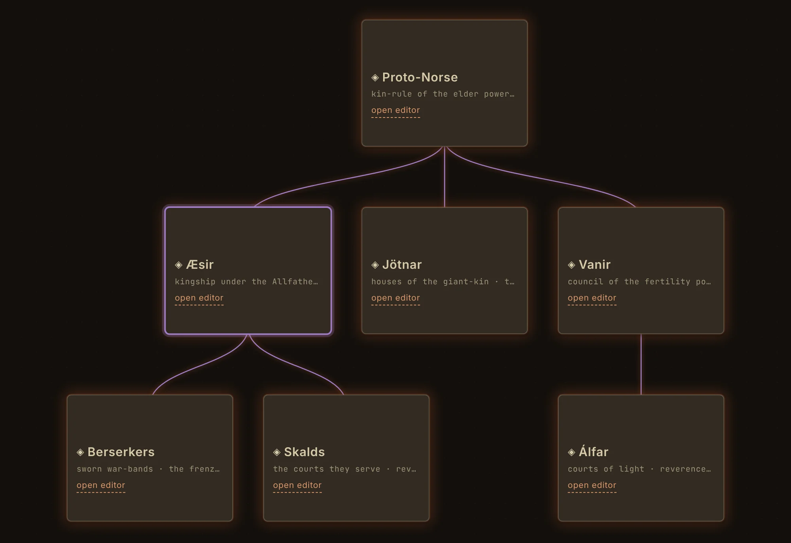
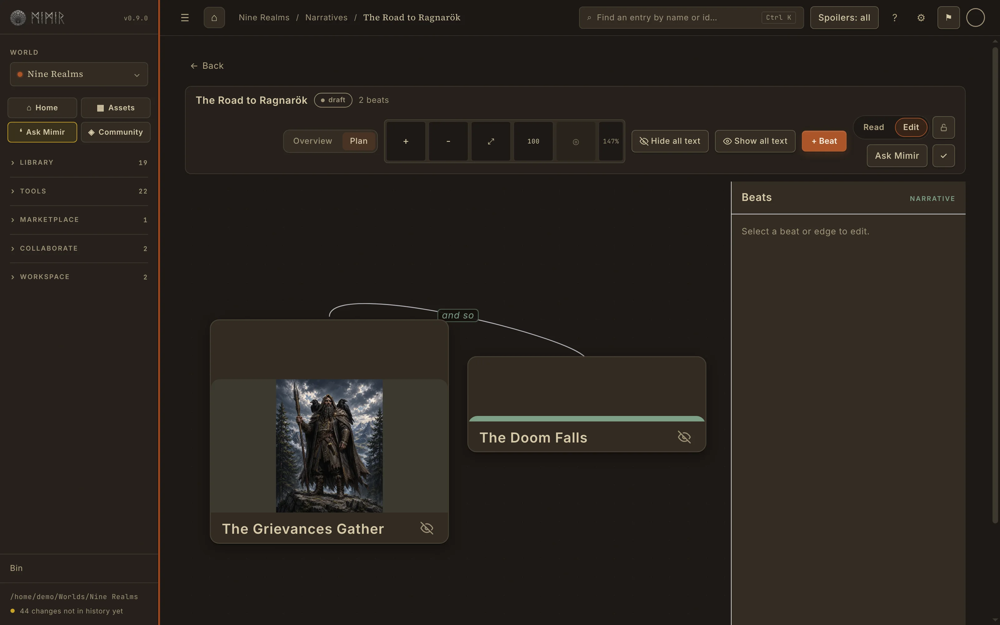
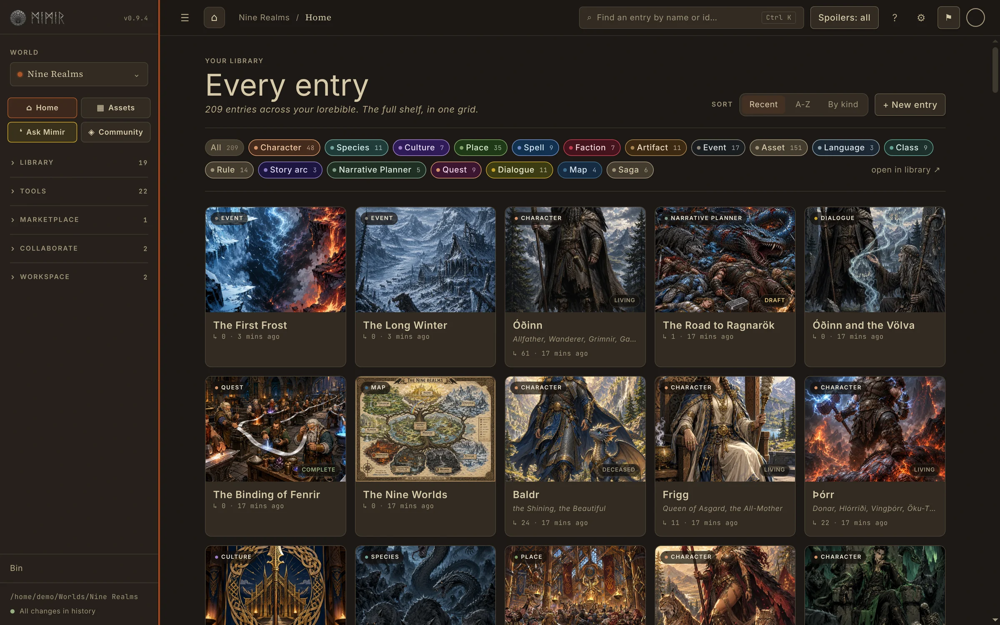
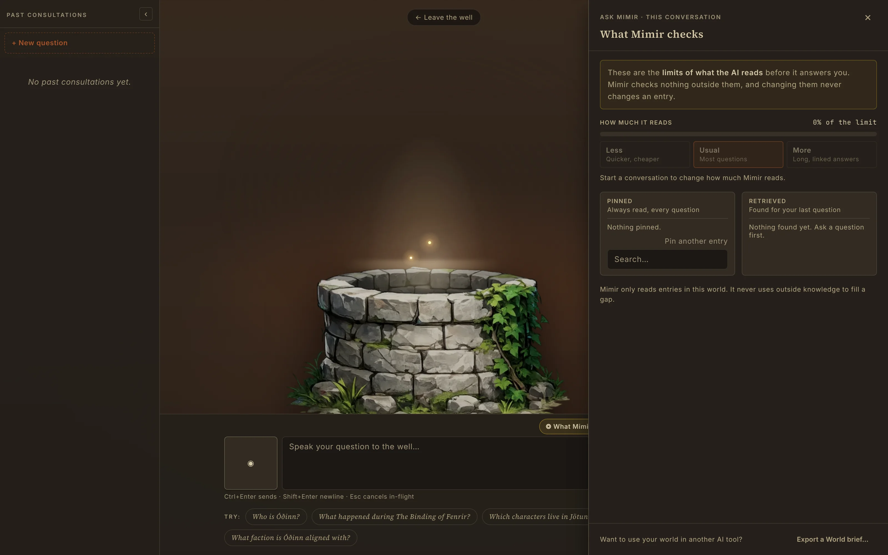
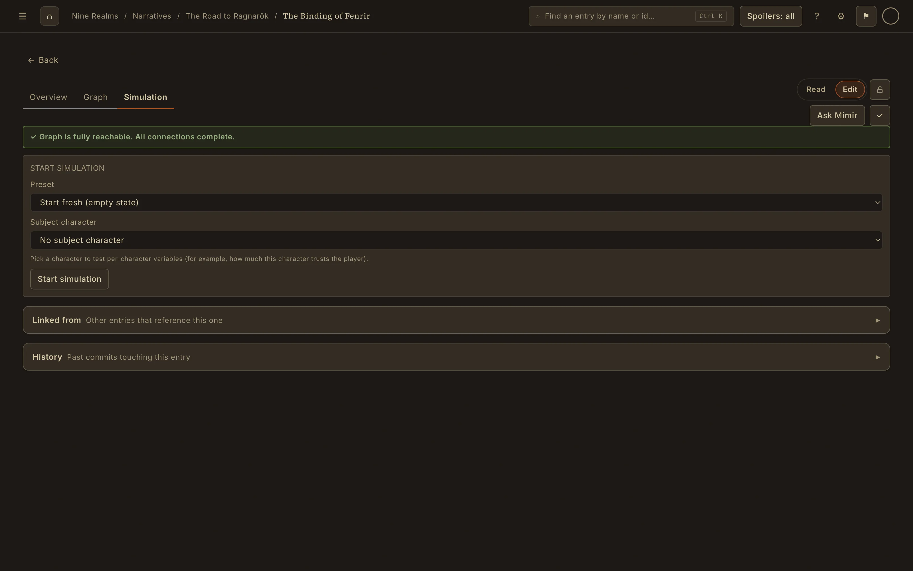
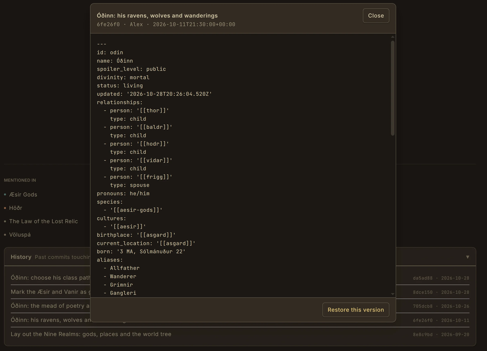

Structured world entries
Create characters, species, cultures, places, factions, artefacts, events, languages, spells and other connected lore.
Mimir brings worldbuilding software, visualisation, narrative planning, testing, consistency tools and collaboration into one connected workspace. Explore the tools individually, or follow the connections between them.
Mimir's public beta opens soon. Each feature below shows its status and the plan it needs.
No matching carving was found. Try a capability such as timeline, language, family, AI, rollback or quest.
Create and structure the world's information without turning creativity into form-filling.
Start with a name and a thought. Add fields, links, imagery and structure only when the world needs them.

Create characters, species, cultures, places, factions, artefacts, events, languages, spells and other connected lore.
Begin with as little as you know, then deepen an entry as the idea grows.
Make your own entry types and fields, or change the built-in ones, to fit your world.
Roll on weighted tables you write, or pick a random entry from your own world.
Keep images and supporting media connected to the entries that use them.
Choose one reusable lead image for an entry, browser card or narrative beat.
Give a culture its own name lists, then press Random name on a character.
Start a world with the Default entry types or the free D&D 5e (SRD 5.2) template.
Reveal how people, places, cultures, histories and ideas depend on one another.
A world is defined by the relationships between its pieces, not merely by the existence of pages.

Reference another entry naturally while writing and move straight to its context.
See every place that refers back to an entry.
Model explicit, typed connections between entries rather than relying on prose alone.
Group ideas across entity types and follow connections without losing your place.
Expose lineage, hierarchy, geography and chronology as visual systems.
Mimir does not flatten every connection into one generic graph. Each view is designed around the structure it needs to explain.



Trace ancestry, partners and family lines through a focused genealogy view.
Understand taxonomic branches and how species relate across a world.
Explore parent, descendant and related cultural structures.
Arrange members, roles and internal connections as an organisation actually works.
Move from worlds and regions down through settlements and contained places.
Narrow each specialised tree with filters that match its subject.
Understand events across the world's chronology instead of reconstructing order from pages.
Define in-world time and use it consistently across events and planning.
Connect locations and entries to geography rather than keeping place trapped in prose.
Develop stories, campaigns and interactive narratives beside the lore they depend on.
These are narrative and world-use tools inside Mimir's connected platform, not an attempt to turn it into a generic novel-writing app.

Structure an arc and connect its people, events and places back to canon.
Arrange visual beats, branches and connected lore across a wider narrative canvas.
Design objectives, consequences and connected lore for interactive stories or campaigns.
Build branching conversations with the characters and context they reference.
Keep reveals and secret information controlled while using lore in plans.
Retrieve the right information and distinguish structural certainty from language-based review.
Search, deterministic validation and AI review work together, but they do not pretend to be the same kind of evidence.


Find entries with fuzzy search and combine filters for type, world, spoiler level and tags.
Catch known structural problems using rules whose results can be explained.
Surface likely naming clashes before they spread through a connected world.
Ask grounded questions using relevant world context without silently declaring inventions canon.
Ask Mimir to make a minor character, item or place from what your world already holds.
Review meaning-level contradictions that deterministic rules cannot understand alone.
Package the right part of your world as one file for another AI tool.
Work with a world's own language using its documented vocabulary and rules.
Speak instead of typing, on your own computer.
Explore dialogue, quests, choices and system behaviour while the work is still easy to change.
Simulation lets anyone step through quests and dialogue to find broken branches. Proving Grounds, on Loremaster, adds AI-refereed play against your world's rules.

Play a game in your world with Mimir AI as the referee, against the Rule entries you wrote.
Step through branching conversations and inspect how choices alter the exchange.
Test objectives, outcomes and dependencies before using them in a live story or campaign.
Represent facts that can change as choices and systems move the world forward.
Explore how connected rules and changing state affect a designed world.
Experiment with tabletop sessions and game rules in context, with Mimir AI as the referee.
Keep work readable, recoverable, portable and under creator control.
Local-first is not a privacy slogan. It means ordinary files remain accessible, worlds are not locked behind a subscription and history can help recover mistakes.

Keep the core world on the creator's own machine in readable formats.
Create locally without treating a creator's own files as a metered cloud resource.
Review entry history and recover earlier work when an edit goes wrong.
Everything you delete goes to the Bin first.
Take the world's material out in useful formats without a premium retrieval toll.
Prepare a public version that respects spoiler and reveal controls.
Export your world for Unreal, Unity or Godot.
Bring existing work into Mimir without paying extra to regain useful access to it.
Adapt contrast, typography and reading behaviour to different needs.
Reduce interface noise when the work needs sustained attention.
Collaborate, host and reveal the right information to the right people.
Mimir distinguishes collaborators who help shape the work from participants or players who experience a controlled view. It is not an open social network.

Control what different audiences can see without maintaining separate copies of the world.
Build one world together, with five roles from Owner to Viewer.
Make selected world access available beyond the local machine when hosting is needed.
Give players or participants a controlled experience without granting editor access.
Players and Co-GMs join a hosted Campaign on free Core.
Track a fight, keep notes to hand and follow the in-world date.
Host a live Proving Ground table and let other players join it.
Read and edit your worlds on your phone.
Keep your worlds in step between your computer and the Mimir phone app.
Optional Shieldwall packs of ready-made entries and art.
Mimir's public beta opens soon. Join the beta to use the complete product early and shape how these tools work together.